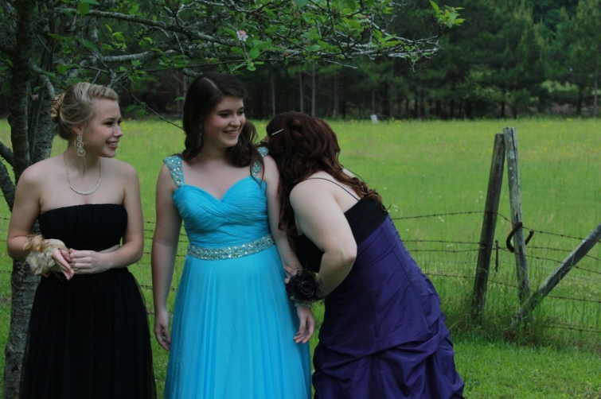

.png)
.PNG)
.PNG)
.PNG)
.PNG)
.PNG)
.JPG)
.JPG)
.PNG)
.PNG)


Their evening began with pictures being taken in our yard before dinner. (I will try not to bore you with too many of the dressed up kid pics.)
daughter and date
the group

silly girls
Now that I have shown you the kids, we will move on to the dinner. I debated on where to serve this “fancy” meal. I really didn’t want to have it in the dining area because it adjoins the kitchen, and our running around in there between courses would not be good. I thought about using our deck area because it is strung with lights but was afraid of the weather and insects. So I ended up deciding on the back porch. It has a table and chairs, a serving table, a sofa and swing and chairs, and it has speakers run from the stereo so they could have music out there too… seemed like the best idea for the dinner.
Here is the menu for the evening. Unfortunately, it did not get hung on the wall. (I always seem to have more ideas than I have time for. Does that happen to you too?)
I tried to take pictures of the food as we got it ready to serve, but let me tell you. It is difficult to tell a bunch of teenagers, “Wait, don’t eat yet so I can take a picture for the blog.” That just doesn’t go over too well.
Here is the serving table set up with the first course of appetizers. (That is sparkling grape juice, not wine chilling in the bucket.)

Here is the second course of salads.
Now do you see this?
This is RAIN. Why is it that everytime I have a party it has to rain??
And we are supposed to be in a drought?
I had given each of them a beach towel to cover their beautiful clothing while they ate. They were almost finished with the salad course. Thunder clapped. A big gust of wind came up and blew out the candles and sent melted wax across the table, AND it began to blow rain all in on the porch. The girls started screaming, and those beach towel wrapped kids grabbed their plates, silver, glasses, and even their place cards(!) and hightailed it into the dining room as fast as they could move. I was laughing so hard my ribs hurt!
So the steaks and potatoes were served, and the meal was finished with lots of laughter in the dining room. (I brought out more candles, and they shucked the beach towels.)
And this was dessert…
My mother made the chocolate dipped strawberries, and my mother-in-law made the cheesecake. I’ve got to say an extra big thank you to my mom for coming to my rescue the last couple of hours before all the people arrived to take pictures. I would have never gotten everything done on my list if she hadn’t been there to help me! So thanks Mom.
The kids were hilarious and very appreciative of the dinner. It was an exciting Saturday and our last prom. I will miss all the laughter.
Bittersweet.
Until next time…


.PNG)
I’m doing this next weekend!
Thanks!
More comments for Kelly!!
I’m SO glad I came back and saw this post!!
What a meal!
Your daughter is so sweet and cute and pretty.
HOW did you write so perfectly on that chalkboard?!
And you are so pretty and young!!
————————————————————————
Yay! More comments! THEY had a great meal. My husband and I had hotdogs! 🙂 Chalkboard writing is just one of those things I do…I think it is like “drawing”. Thanks for the compliments for my daughter and me. I am FAR from young. And thank you sooooooo much for featuring me on your blog!!!
Kelly
What a sweet idea, and the kids were sure to have a better time in your beautiful home that in a restaurant. Love the fun and laughter they had because of the rain, sounds like a wonderful evening!
——————————————————————–
They did have a fun time, and you are right. The rain did add to the hilarity of the evening! It was probably more relaxing too than going out to a restaurant. Thank you for reading and leaving your sweet comment, Kelly!
Kelly
The post that I’ve been waiting for! I thought of your dinner when it started to storm on Saturday! But alas- it still looked fabulous. LOVE the menu board (and your daughter’s dress!)
———————————————————————–
Hey Kathy! We’ve been missing you at work. Thank you for dropping in to read about the prom AND for your sweet comments. Glad you liked my daughter’s dress. It took this procrastinator here over 2 hours Saturday morning to alter it and make that darn sash! But it all turned out well.
Hope we see you soon.
Kelly
waaaaaaaay better than any fancy restaurant!! what a wonderful idea! i wish my mum had done that for prom! the menu sounds delish, your handwriting kills me, and the guests looked like they had a marvelous time. you are a wonderful host!! i thought the rain made everything that much more cozy!!
xo, tessa
ps. your daughter looked beautiful!!
———————————————————————–
Tessa, I don’t know if it was better than a fancy restaurant, but it was certainly less expensive for them than a fancy restaurant. They did have a great time, and we didn’t have to worry about them driving on the interstate in the rain. Yes, I agree, the rain did make it more cozy.:) And thank you for your kind compliment for my daughter.
kelly
Unbelievable as usual like everything you do!
——————————————————————–
What a nice thing to say! Thanks for reading and commenting Paulette. I just wanted the kids to have a nice, memorable evening for their last high school prom.
Kelly
You did an absolutely amazing job! LOVE the menu board and the place cards. And of course, your daughter looks beautiful on her big night. 🙂
———————————————————————-
Bless you for your sweet comments Aimee. We were “running around like chickens with our heads cut off” for the last hour. (I don’t really think chickens do that. ) 🙂
Beautiful pictures – everyone looks amazing and the food looks delicious. I especially loved the menu board…I absolutely love your handwriting!
————————————————————————
Thanks Kayleigh! I thought they all looked great too. I understand the tux rental place lines were awful! Menu board was done in a hurry, but I am glad you like the writing. It was hard to fit it all on there!
Kelly